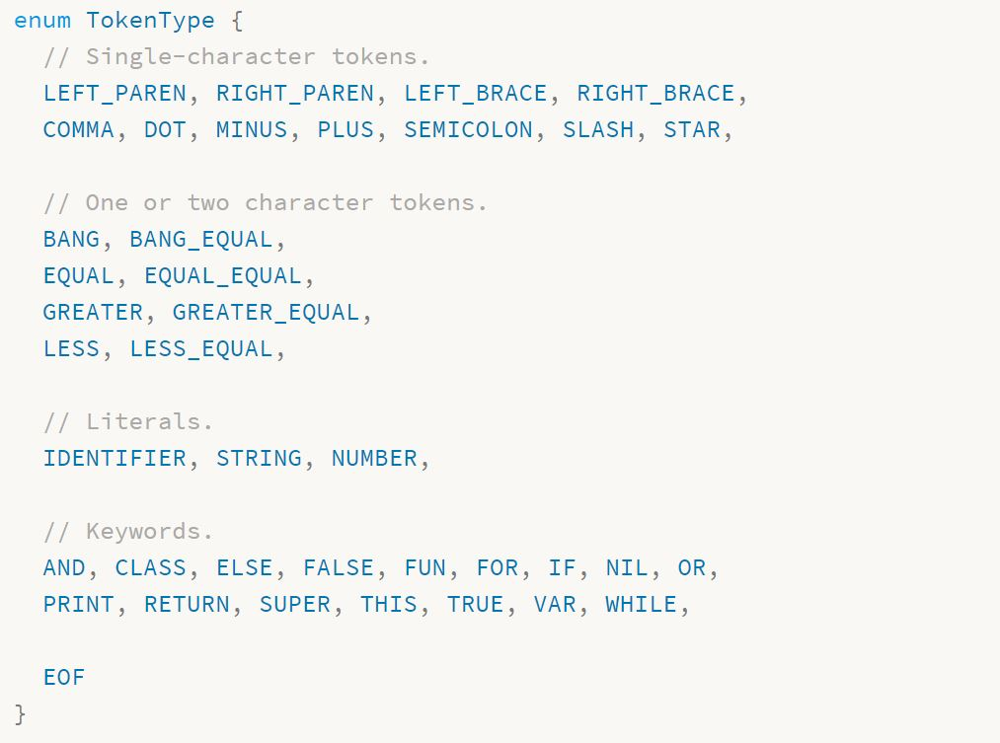
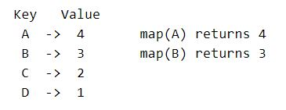
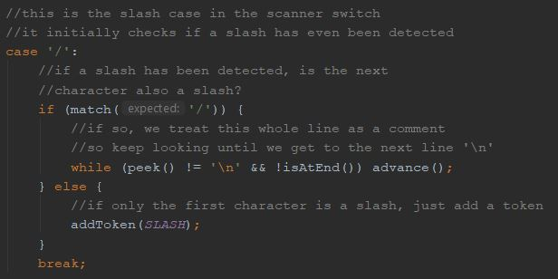
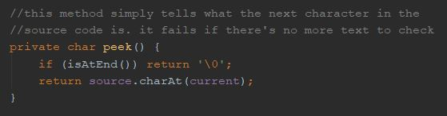
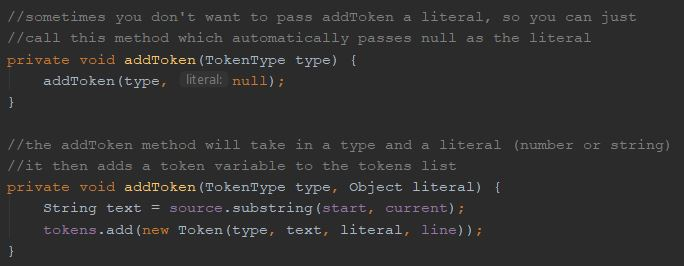
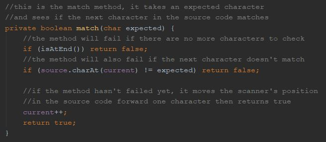
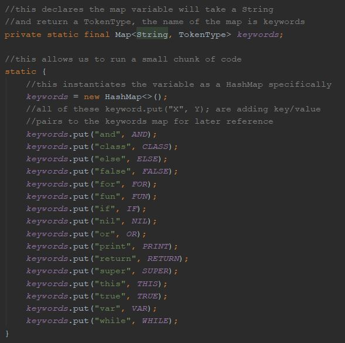

Project Overview
Project Description
I plan to create a lightweight and educational programming language with C-family syntax used for prototyping applications and learning programming concepts. I plan to use Java and C to make my scanner, parser, and interpreter.


Technology Needed
Github - VCS, code sharing, and website hosting
IntelliJ - main IDE and project manager for Java/C
VS Code - simpler editor for prototyping and website work
Project Objectives
- Greatly improve mastery of C-familiy languages
- Learn about the anatomy/design of programming languages
- Help me decide if I want to pursue CS as a career
- Improve communication skills related to technical topics
- Develop efficient time management and planning skills for long term projects


Areas of Reseach
Programming language concepts (scope, classes, variables, etc.)
Niche syntax and the programming language pipeline (i.e. RegEx, scanners, parsers, and interpreters)
Final Presentation
My final presentation will talk about the basic things necessary to build a language, a tour of my website, and examples of documentation.
During my presentation I’ll do a side by side comparison of a simple program such as a calculator in multiple languages (for example, Java, C/C++, my language, and Python) to show where it stands between them to highlight benefits of my language and acknowledge drawbacks.
We’ll know if my project is a success if simple programs can be written quickly by new programmers using the support my website provides. To test this, I’ll have an interactive segment of my presentation where someone with little to no programming experience can download my language and write a “hello world” program using my documentation in 5 minutes or less.
My Logo
My logo is in theme with many other programming language logos by being tied to the name (like Ruby, Python, and Java), so I decided on an interseting looking "M".
The name Minn comes from the Roman god of wisdom, education, and strategy Minerva. The color blue represents intelligence and learning while dark gray is a very modern color. Finally, I use the font consolas, brackets, and a semicolon to relate back to my programming themed project.
Advisors
Lorin Jurow - Expert Advisor
- Software Engineer at Masque Publishing.
- Experience with the transpiler Haxe.
- Knowledge of industry best practices, compilers, interpreters, IRs, and parsers.
Magalin Sendhil - Support Advisor
- Experience with making programming languages
- Can critique writing and programming
Sub Mohanty - Support Advisor
- Experience with various programming languages
- Can critique writing and programming
Diane and Bill Roberts - Support Advisors
- My parents, will critique writing and formal language
Weekly Goals
Week 1 Goals
- Research the parts of an implementation for a basic programming language on craftinginterpreters.com
- Learn how to use IntelliJ by using the "learn IDEA plugin," talking to Sub, and finding videos online
Week 2 Goals
- Research what makes C-family languages unique (allowing null/global variables, inheritance, etc.) and make a list of each distinction I've found
- Refamiliarize myself with Java syntax by looking at other people's Java code and researching file/string manipulation functions in Java
- Start learning C syntax by looking at C code and using a C syntax reference like cprogramming.com
Week 3 Goals
- Recover from the snow days and try to stay on schedule.
Week 4 Goals
- Research lexemes, RegEx, and tokens to begin prototyping a scanner, following along on craftinginterpreters.com
- Start constructing my first scanner prototype with craftinginterpreters's tutorial to understand the different necessary mechanisms inside the scanner.
Week 5 Goals
- Continue the scanner portion of the craftinginterpreters.com tutorial.
- Continue researching C and Java syntax by looking at syntax references.
- Explore the possibility of using python in my language by researching the drawbacks/benefits of python. (If I want to use python, start refreshing myself on python syntax).
Week 6 Goals
- Finish the scanner portion of the craftinginterpreters.com tutorial.
- Create a framework for my own scanner after completing the tutorial, it should have a main loop and be able to scan single character expressions.
Week 7 Goals
- Start research on a parser which turns the tokens of the scanner into a syntax tree.
- Learn what syntax trees are and how they're represented in actual java code.
- Type up my job shadow report.
Week 8 Goals
- Continue research and work on the parser.
- Type up a syntactical grammar reference (effectively a list of grammar rules to determine which "sentences" are valid and which are not).
Journals
Journal #1
Weekly Goals
Week 1 (10/14)
- Research the necessary parts of a basic programming language implementation on craftinginterpreters.com.
- Learn how to use IntelliJ by using the "learn IDEA plugin," talking to Sub, and finding videos online.
Week 2 (10/21)
- Research what makes C-family languages unique (allowing null/global variables, inheritance, etc.) and make a list of each distinction I've found.
- Refamiliarize myself with Java syntax by looking at other people's Java code and researching file/string manipulation functions in Java and practicing.
- Start learning C syntax by looking at C code and using a C syntax reference like cprogramming.com.
Week 3 (10/28)
- Recover from the snow day and early dismissal and try to stay on my timeline.
Week 4 (11/4)
- Research lexemes, RegEx, and tokens to begin prototyping a scanner, following along on craftinginterpreters.com.
- Start constructing my first scanner prototype with craftinginterpreters's tutorial to understand the different necessary mechanisms inside the scanner.
My Research and What I Learned
Scanners
I already knew that the 3 basic parts of building a programming language were: creating a scanner, a parser, and some kind of code generation (either interpreter or compiler) but I wanted more detail on each of those parts. The first step on building a programming language is making a scanner, so I decided to focus my research on that. I looked at code examples of scanners and read about the theory behind them to figure out what scanners actually do and learn how to make my own.
A scanner’s job is to take the code the user types and chunk the text into sections called “tokens” to prepare it for the parser. A token can be a keyword like "while" or "class"), a number, a symbol + ( ) { } ;, or a string (stored text like “Alex”). The scanner does this by looping through every character in the file and deciding what type of token it belongs to. It checks if a lexeme (chunk of characters, essentially a word) or character is predefined as a keyword or important symbol (like "class" as a keyword to define a class, or + as a symbol to add 2 numbers, or “ as a symbol to start or end strings) and will make a token of that type (type CLASS or type PLUS). The scanner also has to check for variable names, it does this with regular expressions.
Regular Expressions
Regular expressions (regex) are a special type programming syntax that can tell if a string meets certain constraints. For example, if you wanted to make sure all variable names in your language start with a lowercase letter or and underscore, then only contain letters and numbers past the first character, regex is very useful.
[a-z_][a-zA-Z0-9]* is the regular expression for the example I explained above.
The “[a-z_]” means the first character of the string must be either “a-z” (specifically lowercase) or an “_”. The second part of “[a-zA-Z0-9]” means the second character can be either “a-z” (lowercase letters), “A-Z” (uppercase letters), or “0-9” (numbers). Finally, the “*” at the end of the regular expression is connected to the “[a-zA-Z0-9]” and means that “[a-zA-Z0-9]” applies to all following characters. Without the “*”, the second statement “[a-zA-Z0-9]” would only apply to the second character of a string being checked.
Enumerator Variables
Earlier I mentioned the scanner will create a token of the correct type when reading the source code of a file. These token types are created using enumerator type variables. In practice, a programmer will create an enumerator object named TokenType and list the different accepted values. Integer types don’t accept values like 5.4, they only accept whole numbers. Enumerator variables can only be an accepted value listed within the object. Below is an example of an enumerator object used for tokens. It lists within it all the accepted values of any TokenType variable.
C Family Distinctions and Syntax
Another area of research I did was C family distinctions and syntax. Just like real languages, programming languages differ from one another in style and practices. C family languages are usually object oriented which means the are suited to a programming style where the programmer makes every part of the program an object with attributes and relationships to other objects (objects in programming can have children or parents, where they inherit or pass on characteristics about themselves).
C family languages are also usually statically typed, which means all variables have a type when they are declared. Dynamically typed languages (the opposite of statically typed) allow the programmer to make a statement like “var x = 72;” then later change x to a different type like “x = ‘oranges’;”. The programmer just changed x from an integer type to a string type. Statically typed languages don’t let variables change type ever. For example, a statically typed language declares the type when the variable is created: “int x = 72;”. Right there the programmer declared x as an integer by using the int keyword. x can no longer be anything but an integer because it’s not allowed to change types. This statically/dynamically typed distinction affects the syntax of the language because dynamically typed languages just need the var keyword to declare variables but statically typed languages need many keywords for each type such as: bool, string, int, float, etc. When the scanner creates tokens, it creates a token object that has a variable of type TokenType (the enumerator variable we explored earlier) telling us what type of token is (so we know if it’s a value, a keyword, or something else).
Accomplishments
I’m working along with the craftinginterpreters.com tutorial and my progress is stored at: this Github page.
Week 1 (10/14)
- I learned about what the scanner actually does, step by step, and now know how to make one myself from scratch.
- I learned the basics of IntelliJ by using the learning plugin I installed with it. I can create and manage java projects in IntelliJ but I’m still learning shortcuts and workflow tricks.
Week 2 (10/21)
- I researched what makes C family languages unique and what statically typed languages do differently. I made a list of distinctions I want for my language at this google doc.
- I refreshed my memory on Java syntax by looking at code examples for scanners in Java and practicing simple code. I made a quick blackjack playing card program in Java to do my AP Statistics project.
Week 3 (10/28)
- I kept working on my website because the snow day and early dismissal disrupted my schedule for the week.
- I did keep researching scanners and viewed more example code. I created the framework for my first prototype scanner.
Week 4 (11/4)
- Scanner research led me to enum (tokens) and regex research, which I understand both concepts quite well now to the point where I could use both of them in real programs.
- I understand what lexemes are, along with lots of other important vocabulary to my project.
- I continued to work on my first prototype scanner, following along on craftinginterpreters
- I broke down and understand the main scanner loop and how it iterates through the characters in the source code.
- I implemented an enumerator variable for TokenType within my scanner.
- I used regex within my main scanner loop.
- I made a project in IntelliJ with multiple files to follow along with crafting interpreters in building a prototype scanner.
Reflection on Goals and Timeline
Goals
I achieved all of my goals by the end of the 4 week period, although sometimes out of order (I’ll address this in the next paragraph). I’ve gotten ahead on my research simply because I’m so interested in my project and I’m understanding the concepts quite intuitively. I have been refreshing myself on Java and learning C but I’m considering writing my language in Python due to the easy prototyping and fast development time allowing me to focus more on the concepts of my language. I’ve learned IntelliJ enough to use it but I’m still learning shortcuts to increase productivity. Overall I’m a little ahead of schedule right now and I want to do what I can to maintain that productivity.
Timeline
I feel like I need to revise my timeline after getting into my project because I’m going about my research differently. Although I’m achieving my timeline goals each week, the style of my research has changed. When I made my timeline I was planning on doing research on concepts then building it from scratch but I don’t learn well that way. I’ve quickly discovered that I learn very well from looking at examples and reverse engineering them, with supplemental theoretical reading. My current plan for research is to follow along with craftinginterpreters.com’s tutorial learning how to build an interpreter through practice, then go back and make a second interpreter myself from scratch with the knowledge I gained. I’m going to draft a new timeline to revise my schedule, my end accomplishments will be the same but I want to reorganize when I do different aspects of my project. I’m on schedule with my timeline now but soon I might become “off” my timeline even while being productive, simply because I ordered events in my timeline differently that I should have.
Journal #2
Weekly Goals
Week 1 (11/4) (Repeat from last Journal)
- Research lexemes, RegEx, and tokens to begin prototyping a scanner, following along on craftinginterpreters.com.
- Start constructing my first scanner prototype with craftinginterpreters's tutorial to understand the different necessary mechanisms inside the scanner.
Week 2 (11/11)
- Continue the scanner portion of the craftinginterpreters.com tutorial.
- Continue researching C and Java syntax by looking at syntax references.
- Explore the possibility of using python in my language by researching the drawbacks/benefits of python. (If I want to use python, start refreshing myself on python syntax).
Week 3 (11/18)
- Finish the scanner portion of the craftinginterpreters.com tutorial.
- Create a framkework for my own scanner after completeing the tutorial, it should have a main loop and be able to scan single character expressions.
My Research and What I Learned
Maps
map is a data type in Java I researched this week to help implement the rest of the scanner. The basic form of a map is called a hashmap and is essentially a key/value database for variable values. I’ll use this for multi-character keywords in the language. Single character keywords like ( and + are implemented in the switch case because they aren’t involved in any longer keywords unlike how / and < are also included in // and <=. Maps are useful for longer character keywords and I’ll end up using one for longer character keywords (Nystrom). They allow me to input a string and if it’s found in the map, retrieve the correct corresponding value. An example of this can be shown with letter grades and corresponding GPA’s. To a program, the letter A and the number 4 have no inherent connection but with a map, we can create one (Garg).
Java Syntax
Building the scanner requires lots of new syntax for Java that I researched along the way. Maps are declared with the syntax Map<keyType, valueType> and defined with new HashMap<>(). Key and value pairs are then added to the hashmap by using mapName.put(key, value) (Garg). I would normally add every key and value pair in the constructor but we can make our code more organized by using static { } with the variable declarations. This just runs a small chunk of static code outside of any method (Nystrom).
Python
Because Python is an interpreted and not compiled language, it runs quite a bit slower than Java or C/C++ which are compiled. (This StackOverflow Issue). Because I am likely writing an interpreter and not a compiler, I decided to not use Python. I want my interpreter to be reasonably fast and using a slower language to run a slower program will make it much harder for that to happen. I also am already learning necessary Java syntax through the craftinginterpreters tutorial so if I use Java to build my language, I have to do less research into Python syntax.
Accomplishments
I’m working along with the craftinginterpreters.com tutorial and my progress is stored at: this Github page.
Week 1 (11/4) (Repeat - All supporting research included in journal #1)
- Scanner research led me to enum (tokens) and regex research, which I understand both concepts quite well now to the point where I could use both of them in real programs.
- I understand what lexemes are, along with lots of other important vocabulary to my project.
- I continued to work on my first prototype scanner, following along on craftinginterpreters
- I broke down and understand the main scanner loop and how it iterates through the characters in the source code.
- I implemented an enumerator variable for TokenType within my scanner.
- I used regex within my main scanner loop.
- I made a project in IntelliJ with multiple files to follow along with crafting interpreters in building a prototype scanner.
Week 2 (11/11)
- I worked to implement whitespace recognition in the scanner loop, so any spaces, tabs, or new lines are skipped over and not added as tokens.
- I also implemented slashes, as they can be used for comments or actual code. Similar to the way ! and != were implemented last journal, it checks what’s after the first slash, to tell if the source code is / or // and in the case of //, uses a new “peek” helper method to skip to the next line without adding a new token.
- I finally decided not to use Python in my language due to its lack of speed and my prior knowledge with Java.
Here are examples of achievements with internal comments to explain what the code does:
Detecting slashes
The peek method
The addToken method
The match method
Week 3 (11/18)
- I finished the scanner on the craftinginterpreters tutorial, specifically adding longer keywords using a map. There's much more added that would take up too much space in images. I recently pushed changed to the github here. An image of the map I created can be found below: 
Reflection on Goals and Timeline
Goals
I’ve fallen somewhat behind my goals for this week as a lot of my time was spent not working on my actual project this week. The first Journal I did was graded and passed back so I was reviewing and editing my Journal to make corrections. I also didn’t know that the first Journal was supposed to be 3 weeks long, not 4 weeks so this Journal will be shorter than normal at only 2 real weeks of research/reflection to get back on schedule. I’ve been counting the last week of journal #1 as this journal’s first week.
Throughout the second week, I continued with the scanner portion of the craftinginterpreters.com tutorial. As I’ve gone, I’ve continued to learn more Java syntax, more specifically learning about helper methods and string manipulation functions. I do not plan to incorporate Python into my project as it would require extra research into the syntax of the language, whereas I’m constantly learning about Java syntax and scanner implementation at the same time on craftinginterpreters.com. It’s also slower than Java and as I’ll be writing fairly unoptimized code to start, so I don’t want Python slowing down my program anymore than it already may be.
During the second week, I finished the scanner tutorial. I am a bit behind and haven’t created my own scanner’s framework as I got distracted working on my website/journals, but I plan to catch up over the long Thanksgiving weekend. I also have my job shadow during the 27th where I plan to ask Mr. Jurow questions about my project and the plans I have for it.
Timeline
As far as my timeline goes, it still needs to be revised. I have been following along with the craftinginterpreters tutorial and haven’t started my own scanner yet. With my current pace I’ll be ahead of schedule on the large scale deadlines I set for myself (like finish the basic scanner, the basic parser, the advanced scanner, and advanced parser) but the small guiding deadlines regarding my research are still off. I’m doing all the research ahead of time during the tutorial, then building my own scanner after the tutorial, whereas my initial timeline had me researching a small amount, building a small amount, then researching further, then building further, etc.
Timeline
October
Week 1
10/8 - Learn how to set up the Git repo. Install IntelliJ and learn the basic functions.
10/10 - Reseach the parts of a language to get a better grasp on the concepts.
Week 2
10/21 - Reseach to make a list of basic distinctions in my language (data types, null, etc.)
10/23 - Refamiliarize myself with Java syntax. Reseach string and file interpreting functions.
10/25 - Research into C sytax, learn variables, functions, loops, and classes.
Week 3
10/29 - Research and understand basic principles of pointers in C, including function pointers.
11/1 - Reseach the structure and purpose of a scanner. Find examples in Java/C.
November
Week 1
11/5 - Research regex, lexemes, and tokens to start making a scanner.
11/7 - Build a prototype scanner and reserach any confusing attributes.
Week 2
11/11 - Go into depth on C style syntax and best-practices (doesn't have to be C, just C-style).
11/13 - Continue research if needed, otherwise compile a list of basic syntax rules for my language.
11/15 - Reseach on benefits and drawbacks of OOP and passive or active memory management.
Week 3
11/19 - Build upon previous lists with more complex langauge syntax and style decisions.
11/21 - Improve the scanner by adding more expressions, keywords, and language syntax.
Week 4
11/25 - Learn what context free grammar is and how it works.
11/27 - Job Shadow.
December
Week 1
12/2 - Continue research on CFG and start research on syntax trees. Experiment with examples.
12/4 - Continue CFG and syntax trees testing and reserach. Decide if they're right for my project.
12/6 - Continue improving the scanner with more keywords for all basic functions of a language.
Week 2
12/10 - Continue improving the scanner, or start reseraching parsers.
12/12 - Conitnue reseaching parsers - how they work and interact with scanners.
Week 3
12/16 - Touch up scanner, or read more on parsing.
12/17 - Shadow write-up due.
Week 4+
Winter Break - Build a prototype parser then relax or go for stretch goals.
January
Week 1
1/7 - Work on my presentation and practice talking points.
1/9 - Finish my presentation and practice once or twice more to fully prepare.
Week 2
Mid Year Presentations.
Week 3
1/20 - Reserach and work on parsing more, look into statements and state.
1/22 - Research environ- ments and possibly implement them if I have time.
1/24 - Continue research and implementation of enviorments and assignment.
Week 4
1/28 - Continue research and implementation of enviorments and assignment.
1/30 - Begin reserach on scope and decide how to implement it.
February
Week 1
2/3 - Reserach about scope, nesting, and shadowing. Implement them.
2/5 - Research control flow and start implementing.
2/7 - Finish implementing control flow for now in my project.
Week 2
2/11 - Project Progress with Advisor team (this may move depending on availability).
2/13 - If needed, adjust expectations of work and project based on the Advisor meeting.
Week 3
2/19 - Learn how, then implement basic functions into my language.
2/21 - Work on connecting functions with scope and error reporting.
Week 4
2/25 - ACT Testing Day.
2/27 - Reseach class implementation for my language.
March
Week 1
3/2 - Continue reserach on class implementation and begin to program them in.
3/4 - Finish class implementation for my language.
3/6 - Greatly improve error reporting for my langauge.
Week 2
3/10 - Improve the memory management of my language (automatic or manual, whichever I chose).
3/12 - Poll people on the language and ask for suggestions on how to improve the language overall.
Week 3
Spring Break - Relax, catch up, or go for stretch goals.
Week 4
3/23 - Implement the basic suggestions that people I polled had for me.
3/25 - Reseach and work more on my code generation.
3/27 - Reseach the implementation of inheritance.
Week 5
3/31 - Begin to implement basic inheritance and reseach more if needed.
4/2 - Finish implementing inheritance. Work on error handiling if finished.
April
Week 1
Polish up my language, finish presentation, wrap things up.
Week 2
4/14 - SAT Day.
4/15 - Finish up my presentation, including code examples for language.
4/17 - Finalize the presentation and practice presenting. Make sure poster is ready.
Week 3
4/20 - Final Project Presentations.
4/21 - Final Project Presentations.
Bibliography
“Admission Academic & High School Course Requirements | Carnegie Mellon.” CMU Enrollment, Carnegie Mellon University, https://admission.enrollment.cmu.edu/pages/academic-requirements.
“Bachelor of Science Degree Requirements.” Purdue University - Department of Computer Science - Computer Science Degree Requirements, Purdue University, https://www.cs.purdue.edu/undergraduate/curriculum/bachelor.html.
“Department of Electrical and Computer Engineering, McCormick School of Engineering, Northwestern University.” Curriculum and Requirements | Department of Electrical and Computer Engineering | Northwestern Engineering, Northwestern University, https://www.mccormick.northwestern.edu/electrical-computer/undergraduate/computer-engineering/curriculum-requirements.html.
Garg, Vishal. “HashMap in Java with Examples.” GeeksforGeeks, GeeksforGeeks, 19 Sept. 2019, https://www.geeksforgeeks.org/java-util-hashmap-in-java-with-examples/.
“Hardware Engineer Careers.” ComputerScience.org, ComputerScience.org, 20 Aug. 2019, https://www.computerscience.org/careers/computer-hardware-engineer/.
“Information Researcher Careers.” ComputerScience.org, ComputerScience.org, 20 Aug. 2019, https://www.computerscience.org/careers/computer-information-researcher/.
Nystrom, Bob. “Crafting Interpreters.” Crafting Interpreters, 2018, https://craftinginterpreters.com/contents.html.
“Software Engineer Careers.” ComputerScience.org, ComputerScience.org, 20 Aug. 2019, https://www.computerscience.org/careers/software-engineer/.
U.S. Bureau of Labor Statistics. “Computer and Information Research Scientists : Occupational Outlook Handbook.” U.S. Bureau of Labor Statistics, U.S. Bureau of Labor Statistics, https://www.bls.gov/ooh/computer-and-information-technology/computer-and-information-research-scientists.htm.
“Undergraduate Computer Science Program.” Undergraduate Computer Science Program Carnegie Mellon University, Carnegie Mellon University, http://coursecatalog.web.cmu.edu/schoolofcomputerscience/undergraduatecomputerscience/#bscurriculumtext.
U.S. Bureau of Labor Statistics. “Computer Hardware Engineers : Occupational Outlook Handbook.” U.S. Bureau of Labor Statistics, U.S. Bureau of Labor Statistics, https://www.bls.gov/ooh/architecture-and-engineering/computer-hardware-engineers.htm.
U.S. Bureau of Labor Statistics. “Software Developers : Occupational Outlook Handbook.” U.S. Bureau of Labor Statistics, U.S. Bureau of Labor Statistics, https://www.bls.gov/ooh/computer-and-information-technology/software-developers.htm.